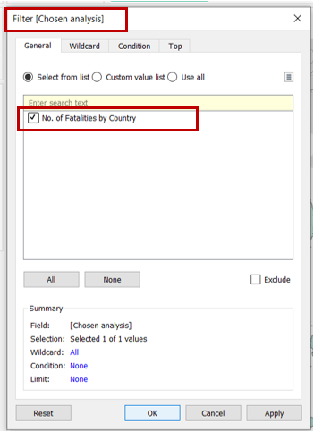

1.0 Critiques and Suggestions for Current Visualisation


1.1 Clarity
| S.N | Critiques | Suggestions |
|---|---|---|
| 1 | The y-axis of the line graph does not start from 0, and the interval varies across graphs. This may lead to confusion when interpreting the growth (i.e. slope/gradient) across different types of event. | Suggest to format the y-axis such that the intervals are all the same across the line graphs and ensure that the y-axis starts from 0. |
| 2 | The labeling of the y-axis for the line graph is unclear. | It will be clearer if instead of having it labelled as “Count of Sheet1” which users do not know what’s “Sheet1”, to re-label as “Frequency”. |
| 3 | Title of the line graph can be clearer so that users can understand from a quick look what the graph means. | Similarly, it will be useful if the title of the line graph chart is labelled as “Number of xxx by Event Type, 2015-2018” |
| 4 | Title of the map is useful as it informs users that the dots refer to the conflict location in 2015-2020. However, users may misinterpret that there is no event/conflict in countries outside of SouthEast Asia since there are no data points. | Suggest to include a note or main heading/title to indicate that the analysis is only for events in the South-East Asia. In addition, suggest to include a note on the data source in the visualisation so that users know where to find the raw data from. |
1.2 Aesthetics
| S.N | Critiques | Suggestions |
|---|---|---|
| 5 | The data points on the map are overlapping with each other and hence users may not know if other events happened at the location also unless they select the “Event Type” legend on the right. | A better way to present the data points is to add transparency to the dots and set “single selection” in the event type when toggling with the map. |
| 6 | Colour of line graphs do not sync with the legend. Currently, the lines have the same colour as “Battles” which may be slightly harder for users to relate to the map. | Suggest to sync the colour so that users can better relate to the map. |
1.3 Interactivity
| S.N | Critiques | Suggestions |
|---|---|---|
| 7 | Little to no interactivity between the line graph and the event type filter. | Suggest to retain only the relevant line graph upon filtering rather then showing all the graphs so that users can have a better focus. |
| 8 | Although the country changes upon filtering, the event title for the map doesn’t change upon filtering. | Suggest to update the “Event” to be dynamic and changes when users select the specific event type. |
2.0 Proposed Design
Following design shows the layout for the main dashboard which will be interactive.

By selecting the “Analysis” filter, the dashboard will automatically update the map and trend line accordingly.


| S.N | Advantages |
|---|---|
| 1 | With a main title, readers can easily understand the context and know that the analysis only covers South-East Asia countries and events from 2015 to 2020. |
| 2 | Additional filters (dropdown, single selection) such as Analysis, Country and Event Type will be included as additional features for deeper analysis by users. |
| 3 | Instead of only having 1 map on the location of the conflict and the trend line to show the frequency of the conflicts, users can now explore further as they will have 4 different analysis view (1 - Number of conflicts; 2- Exact location of the conflict; 3 - Number of fatalities; 4 - Number of fatalities per conflict) to choose from. It is important for readers to have different views as higher number of conflicts may not necessary mean more fatalities etc. In addition, the map and trend line chart will automatically update upon selecting the desired analysis. |
| 4 | A text note will be included at the bottom of the dashboard to highlight any caveats and to indicate the data source. |
| 5 | By plotting all the event types within a plot, it ensures that all the lines have the same y-axis interval i.e. synchronized axis, and the y-axis will start from 0. |
| 6 | Based on the analysis selected, the labelling of the y-axis will automatically be updated, and hence prevents any confusion for the users. |
| 7 | In addition, the colour of the trend line will synchronise with the legend so that users will be able to correctly match the trend to the correct event type. |
| 8 | By adding transparency to the data points, users will be able to clearly identify the location of the conflict. Without any transparency, users will not know if there are other data points overlapping with each other. |
3.0 Data Visualisation Steps (using Tableau)
3.1 Data Preparation
Step 1: Open a new Tableau window, click on ‘Microsoft Excel’ and navigate to the data file.
Step 2: Change the type for the “Year” variable by clicking on the “#” and select “Date”.
Step 3: Scroll all the way to the back of the variable list, right click and select “Create Calculated Field” and input as shown below. (This variable will be used for counting the number of conflicts)
3.2 Map 1 - Number of Conflicts
Step 1: Open a new Tableau worksheet. Drag “Year” into the “Filters” card, select “Years” and click on the boxes for 2015 to 2020 (period of analysis).
Step 2: Drag the variables “Longitude” and “Latitude” to “Columns” and “Rows” respectively.Then drag “Conflict” into the “Colours” marks card, “Country” to the “Text” marks card.
Step 3: Drag “Event Type” into the “Filters” card and check all the boxes as shown below.
Step 4: Show the “Event Type” filter by clicking on the dropdown arrow and select “Show Filter”. At the “Event Type” card, select “Single Value (list)”.
Step 5: To add the feature of automatically updating the map and trend line as per ananlysis selection, we will need to create a parameter to control the change. Click on the arrow and select “Create Parameter” and key the inputs as shown below.
Step 6: Click on the “Analysis” tab, select “Create Calculated Field” and key the inputs as shown below.
Step 7: Under “Parameters”, click on “Choose Analysis” and select “Show Parameter”. At the “Choose Analysis” card, select “No. of conflicts”.
Step 8: Drag “Chosen Analysis” into the “Filters” card and check the box as shown below.
Final layout of the worksheet is as follow. Rename worksheet as “No. of conflict”.
3.3 Map 2 - Location of Conflicts
Step 1: Right click on the worksheet created in previous step and select “Duplicate”.
Step 2: Update the Marks card by dragging “Event Type” into “Colours” and “Event Id Cnty” into the details. Remove “Country” from “Text”.
Step 3: Click on “Colour” and change the opacity and effects as shown below.
Step 4: At the “Choose Analysis” card, select “Location of conflicts”.
Step 5: Under the “Filters” card, click on “Chosen Analysis” and ensure that the box is checked as shown below.
Final layout of the worksheet is as follow. Rename worksheet as “Location of conflict”.

3.4 Map 3 - Number of Fatalities
Step 1: Right click on the worksheet created in 3.2 and select “Duplicate”.
Step 2: Update the Marks card by dragging “Fatalities” into “Colours”.

Step 3: At the “Choose Analysis” card, select “No. of Fatalities”.

Step 4: Under the “Filters” card, click on “Chosen Analysis” and ensure that the box is checked as shown below.

Final layout of the worksheet is as follow. Rename worksheet as “No. of fatalities”.

3.5 Map 4 - Number of Fatalities per Conflict
Step 1: Right click on the worksheet created in 3.2 and select “Duplicate”.
Step 2: Click on “Analysis” tab, select “Create Calculated Field” and input as shown below.

Step 3: Update the Marks card by dragging “Fatalities per conflict” into “Colours”.
Step 4: At the “Choose Analysis” card, select “No. of Fatalities Per Conflict”.
Step 5: Under the “Filters” card, click on “Chosen Analysis” and ensure that the box is checked as shown below. Rename the worksheet.
Final layout of the worksheet is as follow. Rename worksheet as “No. of fatalities per conflict”.
3.6 Trend Line 1 - Number of Conflicts over the years
Step 1: Open a new Tableau worksheet. Drag “Year” and “Conflict” to “COlumns” and “Rows” respectively. Drag “Year” (check on boxes 2015 to 2020) and “Event Type” (check on all the boxes) to the “Filters” card. Then drag “Event Type” to the “Colours” marks card and ensure that “Line” is being chosen.
Step 2: Drag “Country” into the “Filters” marks card and check all the boxes as shown below. Click on the dropdown arrow and select “Show Filter”.
Step 3: At the “Country” card, select “Single value (list)”.
Step 4: Right click on the y-axis, select “Edit Axis” and update the title of the axis.
Step 5: Similarly, add a reference line by right clicking on the y-axis and select “Add Reference Line”. Update the reference line specifications as shown below.
Step 6: Under “Parameters”, click on “Choose Analysis” and select “Show Parameter”. At the “Choose Analysis” card, select “No. of conflicts”.
Step 7: Drag “Chosen Analysis” into the “Filters” card and check the box as shown below.
Final layout of the worksheet is as follow. Rename worksheet as “Conflict trend”.
3.7 Trend Line 2 - Number of Fatalities over the years
Step 1: Right click on the worksheet created in 3.6 and select “Duplicate”.
Step 2: Update “Rows” by dragging “Fatalities” in as shown below.
Step 3: Right click on the y-axis, select “Edit Axis” and update the title of the axis.

Step 4: At the “Choose Analysis” card, select “No. of Fatalities”.
Step 5: Under the “Filters” card, click on “Chosen Analysis” and ensure that the box is checked as shown below.
Final layout of the worksheet is as follow. Rename worksheet as “Fatalities trend”.
3.8 Trend Line 3 - Number of Fatalities per Conflict over the years
Step 1: Right click on the worksheet created in 3.6 and select “Duplicate”.
Step 2: Update “Rows” by dragging “Fatalities per conflict” in as shown below.
Step 3: Right click on the y-axis, select “Edit Axis” and update the title of the axis.
Step 4: At the “Choose Analysis” card, select “No. of Fatalities per conflict”.
Step 5: Under the “Filters” card, click on “Chosen Analysis” and ensure that the box is checked as shown below.
Final layout of the worksheet is as follow. Rename worksheet as “Fatalities per conflict trend”.
3.9 Creating Dashboard
Step 1: Open a new Tableau dashboard. Drag a vertical tile into the space as shown below.
Step 2: Drag the “Conflict trend” sheet into the space, and hide the title.
Step 3: Drag the “Choose Analysis” filter to be above the chart as shown below.
Step 4: Drag the “Fatalities trend” sheet below the chart as shown below, and hide the title.
Step 5: Repeat step 4 for “Fatalities per conflict trend” sheet.

Step 6: Drag a vertical tile into the space as shown below.

Step 7: Drag the “No. of conflicts” sheet into the space as shown below, and hide the title.
Step 8: Drag the “Conflicts by location” sheet below the chart as shown below, and hide the title.
Step 9: Repeat step 8 for “No. of fatalities” sheet.
Step 10: Repeat step 9 for “No. of fatalities per conflict” sheet.
Step 11: Drag a text box and place it at the top of the dashboard, key the title of the dashboard as shown below.
Step 12: Click on “Event Type” and select “Single value (dropdown)”. Click on the dropdown arrow again, click on “Apply to Worksheets” and select “All Using This Data Source”. Repeat step 12 for “Country”.
Step 13: Drag “Event Type” and “Country” such that the layout of the dashboard looks as shown below.
See Section 4.0 for final dashboard :)
4.0 Final Data Visualisation Output
Data Visualisation Link (Tableau Online)
https://public.tableau.com/views/ArmedConflictinSouthEastAsia2015-2020/Dashboard?:language=en&:display_count=y&publish=yes&:origin=viz_share_link

4.1 Major Insights
Observation 1:
Filtering on “No. of conflicts”, we’re able to see that Philippines has the most number of conflicts compared to other SouthEast Asia countries in 2015-2020. To identify the contributing event, we further filter by “Philippines”. The plot in the second picture showed that the most common conflict is “Violence against civilians” and it was generally a decreasing trend from 2015 to 2020.
Observation 2:
To identify if a particular location has higher tendency of a particular type of conflict, we filter on “Location of Conflicts”. Thereafter, we toggle and select the different event type of interest. Here, by filtering on “Battles” and “Explosions/Remote violence”, we can easily see that an area in Philippines has more battles compared to explosions/remote violence.
Observation 3:
Number of protests increased from 2015 to 2020, the increment was also higher than other event types and above the average. Nonetheless, as shown in the second picture, the average fatalities per conflict (protests) remains below the average.

Observation 4:
Filtering on “No. of conflicts” and “No. of Fatalities”, we may unknowingly conclude that there isn’t much concern in Laos as there’s low number of conflicts and fatalities from the conflicts. However, if one were to filter on “No. of fatalities per conflict”, the number of fatalities per conflict in Laos (0.60) is higher than the average of 0.51 in SouthEast Asia during 2015 to 2020.

Observation 5:
Compared to other SouthEast Asia countries, Thailand had a sharp increase in the number of protests from 2019 to 2020. Nonetheless, the fatality remained at zero.
Hope you enjoyed reading :)